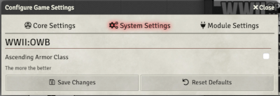
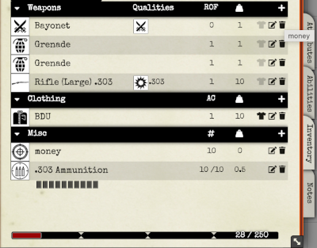
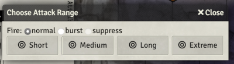
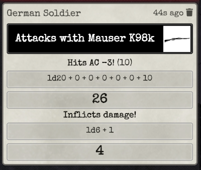

This is an unofficial, third-party implementation of the excellent WWII:Operation Whitebox™ rules by Small Niche Games™ and is copyright of Peter J. Spahn.
Pete has been tremendously supportive of this effort, and I would like to acknowledge my grateful thanks to him.
You need to get the WWII:Operation Whitebox™ rules in order to play. I strongly encourage you to order a copy, or get the Pay-What-You-Want PDF version.
Combined with the OGL content pack for WWII:OWB, it has enough content for you to create exciting WW2 scenarios. I would recommend you purchase some of the excellent scenario packs from Small Niche Games™
This system implementation was originally derived from the excellent Old School Essentials system by U~man. As such, it shares many of its settings and features with that system. If you are familiar with it (and I would highly recommend it!), you should be very comfortable using this.
For further documentation on how to use Foundry VTT please go to Foundry VTT Knowledge base.
Installation
You'll need a Foundry VTT License or GM access to a Foundry VTT server.
- Launch Foundry VTT.
- Go to the Game Systems tab, then click Install System.
-
Find
'WWII:OWB'and click Install. - Go to the Add-on Modules tab, then click Install Module.
-
Find
'WWII:OWB OGL Content'and click Install. - Create World using the WWII:OWB system.
Setup
The System settings are to control system-wide behaviours, and you can access them under the Configure Settings dialog from the Foundry VTT sidebar.

There is only one setting available right now to customize your experience with WWII:OWB.
- Ascending Armor Class: The WWII:OWB default option is to use the original descending Armor Class and the 'To Hit AC 0' attack statistic alias THAC0. If this input is checked, the system will use Ascending Armor Class instead.
Characters
Tweaks
You customize characters through this menu accessible from the header of the character sheet.
- Recruit: Adds the Loyalty rating attribute, replaces the Title field in the header by a Wage input.
- Initiative Bonus: Will add this value to initiative in addition to the Dexterity modifier.
- Next Level: The threshold at which the level field in the Header section of the character sheet will animate.
- Bonus experience: This will add to the experience dealt from the Party Sheet, set manually based on any bonus your character might acquire from their class.
- Experience share:: The share of the party XP you will get from the experience dealt.
- Melee Bonus: A bonus to the Attack roll only for melee weapons.
- Missile Bonus: A bonus to the Attack roll only for missile weapons.
- Armor Class: This value will be added (ascending) or subtracted (default) to the Armor class value that initially depends on the armor you wear and your Dexterity modifier.
- Encumbrance (GM Only): The maximum value at which you can't move anymore. If you have an encumbrance of 1800 it will delay any movement penalty by 200 (1800-1600).
- Calculate movement (GM Only): if you have a tricky case where movement should be manually set, you can uncheck this.
Header

The top of the character sheet header contains text fields you can edit directly. Currently there is no automation of the content here.
The greyed text on top of the experience field is the XP prime requisites bonus that can be set in the Tweaks dialog (see above). It is used when experience is dealt automatically via the party sheet.
The Level field will flash as soon when the character has enough experience to be promoted up a rank. This experience threshold is also set in the Tweaks dialog.
Attributes
The default tab covers the basic attributes of the character.

The six base attributes are in a column on the left.
Rolls can be made by clicking on the attribute name, after clicking you will see a dialog where you can input modifiers.
The book icon above the attributes will show the modifiers for each attribute.
In the 'bucket' shape next to the attributes, you will see the character hit points - current (top) and max (lower) values. The 'bucket' will empty as you lose hit points.
In the 'target' to the right is armor class. The top value is the AC and the lower value is the 'unarmored' armor class. It's calculated depending on the clothing you have equipped. You can add an armor bonus in the Tweaks dialog.
The third box on the right is the Base Hit Bonus automatically calculated by the character rank (level).
On the second row there is a Hit Dice field you can roll.
The third row details the Attack statistics. It will change if you have the Ascending AC setting enabled. On the left the Melee attack modifier that is influenced by strength and on the right the Missile modifier influenced by Dexterity. Both field names are clickable and will roll attacks but usually you would attack using the appropriate weapon in your inventory (see below).

The last row shows the three movement stats, they are calculated depending on the weight you are carrying and the encumbrance options (See the inventory section). You can disable this behavior through the Tweaks dialog.
Finally there is the Universal Saving Throw value. This can be rolled when clicked.

Abilities

The first row contains a rollable entry for finding Hidden Things.
In the abilities section you can create anything that needs a description. These are typically class abilities. You can create a new ability by clicking the plus button or by dragging one from the item sidebar or a compendium. You can open the abilities with the pen icon, show it in the chat with the eye icon, and delete it with the trash icon.
When opened, the ability details can be entered. On the left you
see you can set the ability requirements, for example
Grunt, 3 to indicate a 3rd level Grunt ability,
or Maquis to indicate a standard Maquis ability.
You can enter a roll associated with the ability.
For example if Roll is 1d100, roll type is
<= and target is 40.
The roll will display success in green as soon as the result
is above 40.
When the ability has a roll set you can click on the ability image
on the character sheet to roll directly to the chat.
You can apply the roll result as damage or healing by right
clicking on the chat card, this is true for all rolls.

If you need someone else to roll the ability you can show the whole ability to the chat with the eye icon and they can roll from there. Note that you can slide down the ability description by clicking on its name from the character sheet.
Inventory

The inventory compiles every item you own, including weapons, ammunition, clothing and other miscellaneous gear. Weapons are the first section. Clicking on the weapon icon will roll an attack with damage.

If it is a missile weapon, a dialog will pop up to ask you what range you are firing at, and (if possible) whether you are choosing burst or suppressive fire.

Damage rolled during the attack can be applied to one or several selected tokens if you click on the blood drop icon right to the result. You can apply damage or healing by right clicking on the chat card, this is true for all rolls.
Clicking on the name will expand the item description along with relevant tags.

Here the item is a .303 calibre rifle, that is capable of burst damage, has a short range of 150', and does 1d6+1 hitpoints of damage.
Click on the T-shirt icon to indicate that your character
is equipped/carrying that item.
Tags that are recognized will be displayed as icons (Burst
and Suppress)
Other tags will be written as text.
When you open the weapon sheet by clicking on the pen icon, you can edit the stats and add new tags. Melee, and Missile tags will check automatically the matching checkbox.
Weapons can have attack bonuses. You can add new weapon tags if you type text in the field below the weapon icon and press ENTER. You can enter multiple tags, separated by commas.
For missile weapons that use ammunition, you must set a tag to indicate
the calibre. This is done by adding the tag in the form of size(cal).
e.g.
9mm(cal)

Ammunition is shown in the miscellaneous gear section. Clicking on the entry will expand it and show its calibre and description. There is also a set of usage boxes to indicate the number of rounds left.
At the bottom is the encumbrance bar. This is automatically calculated. If you're encumbrance max value is 250 as default, each cursor passed is the threshold you will lose movement.
Notes
This tab is a free space you can record description and notes. This is enriched so you can use inline rolls, entity links and other fun things.
You can add known languages by clicking on the plus next to the language header. The number of language you can speak can be found in the modifier dialog in the attribute tab.
Enemies & Vehicles
Tweaks
The tweaks menu for enemies is basically the same as for characters, but without experience bonus support or retainers.
The tweaks menu for vehicles is only an initiative bonus.

Header
The first row below the name are the Hit Points, Hit Dice, Armour Class, Basic Hit Bonus, Movement and Saving Throw. and, where applicable, are rollable fields. The Nationality is also rollable below, and rolls a plain 2d6 on the reaction table. The morale is rollable as well.
Abilities & Equipment
This is a combination of the Abilities and Inventory tabs for characters. For Vehicles it is Modifications & Equipment, but they are basically the same thing.
Notes
This is an area with the same purpose and function as for characters.
Initiative
Grouped initiative
By default each character or NPC is assigned to a group. If their disposition is hostile in the Token configuration they will be in group 'Red', Neutral is 'Yellow', Friendly is 'Green'. But the GM can change the group you belong by clicking on the flag to allow for more than two factions. I suggest you set characters default Token disposition to Friendly and Enemies to Hostile.
When you are happy about the groups, you can begin the combat by clicking below the combat tracker. You can reroll the initiative manually with the dice above the tracker. If you reassign a character to a different faction you can set their initiative to the group value by right clicking and select 'reroll'.